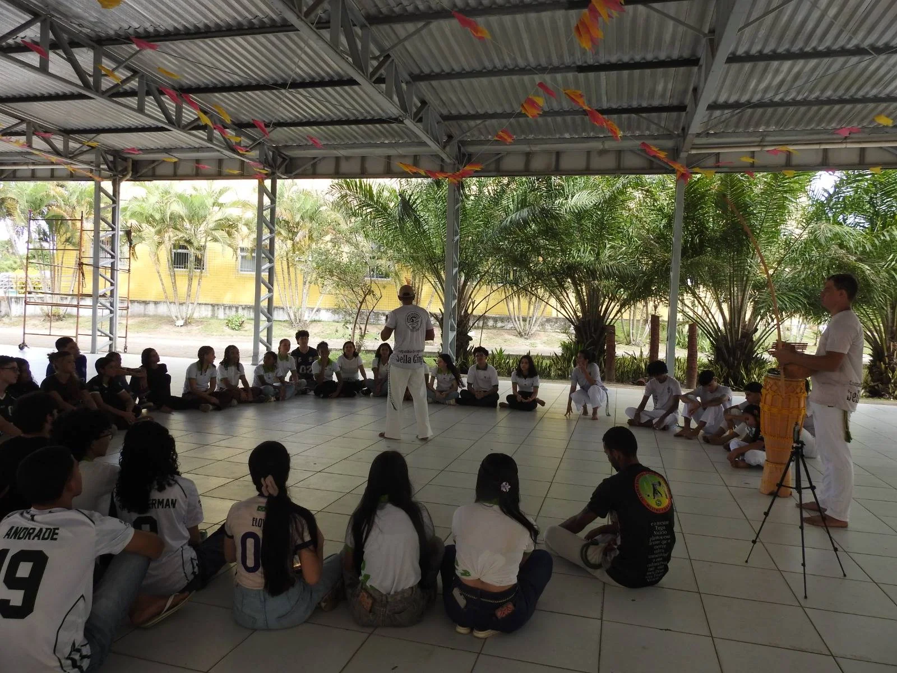
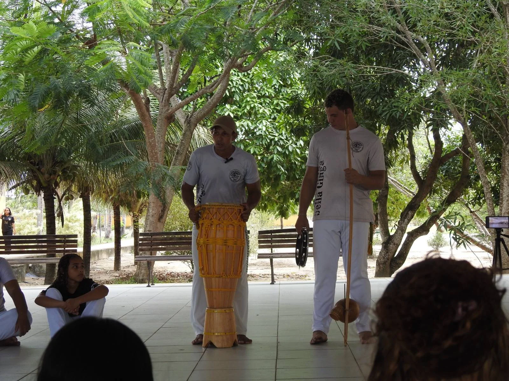
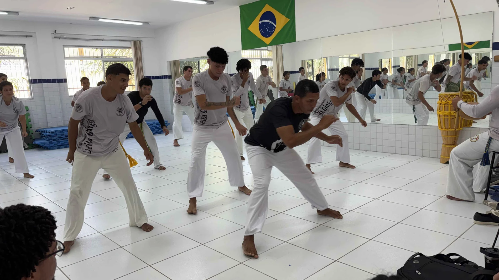
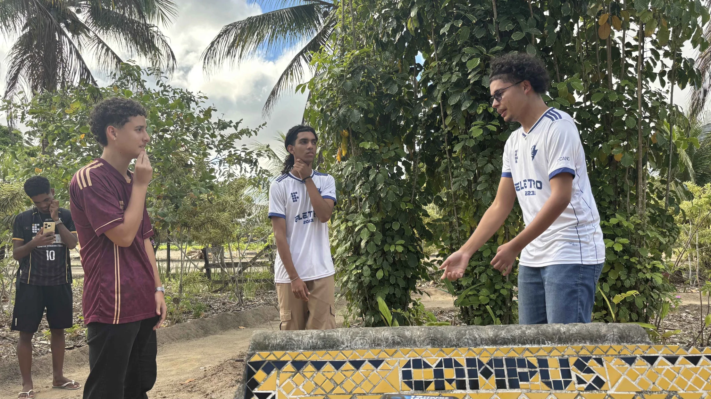
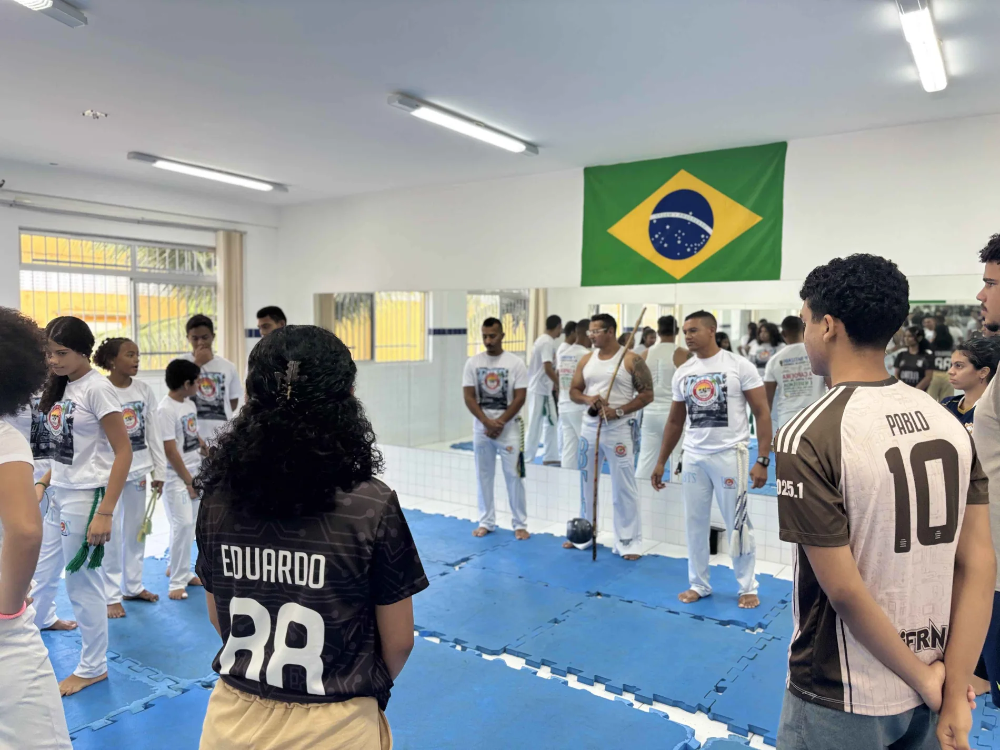
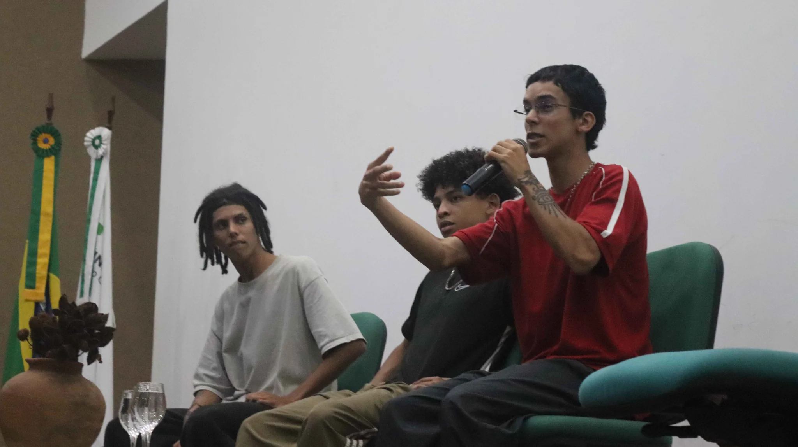
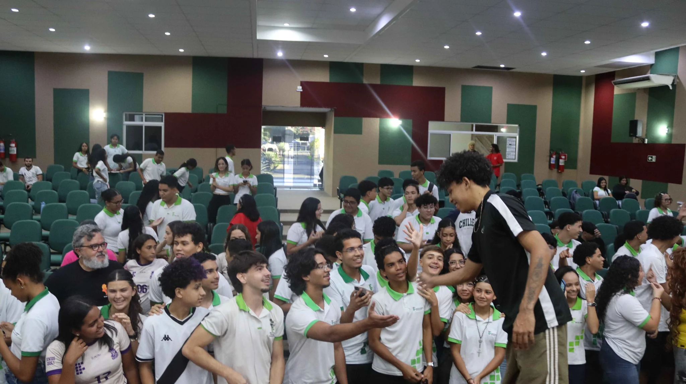
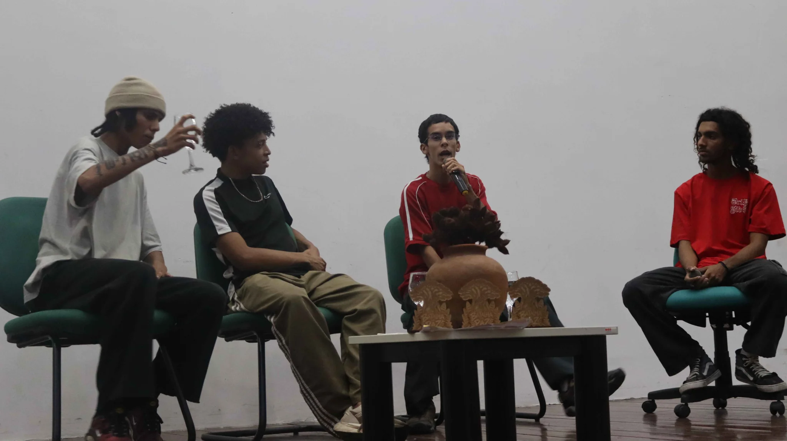
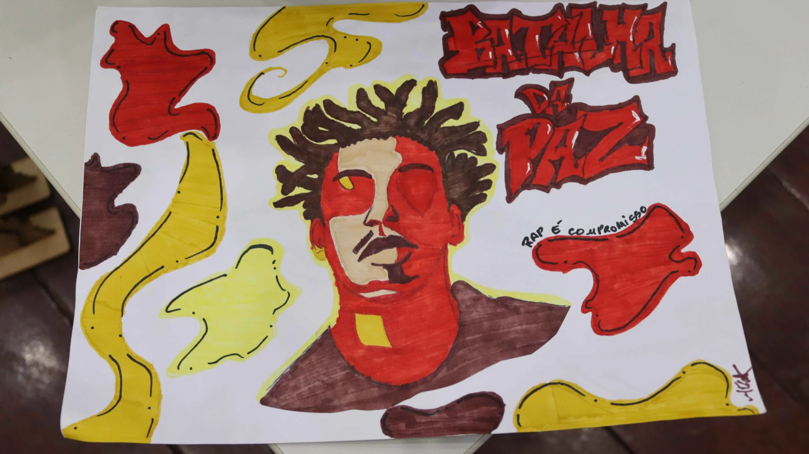
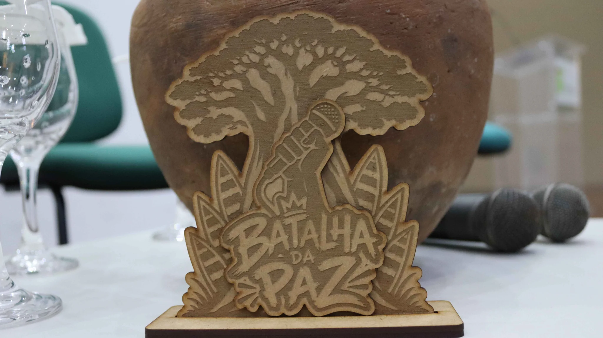

Rimas e oralidade
Na Língua Portuguesa, a palavra se transforma em criação, improviso, escuta e expressão de ideias.
IFRN · NEABI · Campus Canguaretama
Capoeira, hip-hop e educação
em diálogo com a cultura afro-brasileira.

O Giras da Paz é um projeto de extensão do IFRN Campus Canguaretama, vinculado ao Núcleo de Estudos Afro-Brasileiros e Indígenas (NEABI). Reúne rodas de capoeira, batalhas de rima, oficinas e encontros culturais para valorizar a cultura afro-brasileira e ampliar os espaços de expressão da juventude.
Na proposta, a palavra “giras” remete a movimento e caminho: uma maneira de pensar a arte como espaço de pertencimento, resistência, criatividade e produção de conhecimento.
Ler apresentação no portal do IFRNConhecimento que se conecta
A interdisciplinaridade é um ponto central do Giras da Paz. As atividades aproximam diferentes áreas do conhecimento por meio da cultura e do corpo.

Na Língua Portuguesa, a palavra se transforma em criação, improviso, escuta e expressão de ideias.
Na Educação Física, a capoeira aproxima musicalidade, prática corporal e memória afro-brasileira.
Cultura interétnica, relações raciais, qualidade de vida e lazer ampliam a formação dos estudantes.
✳ Na prática

Nas rodas e oficinas, a capoeira aparece como manifestação cultural que reúne música, movimento e memória afro-brasileira. As atividades criam oportunidades de convivência e aprendizagem coletiva.

As oficinas e batalhas de rima abrem espaço para experimentar a palavra, compartilhar vivências e desenvolver a criatividade. A equipe entrevistada também relatou uma oficina de rimas realizada durante as atividades do projeto.
Para entender o contexto
Rimar faz parte de muitas tradições orais. No hip-hop, a rima ganhou novas formas de expressão coletiva, marcada pelo ritmo, pelo improviso e por temas do cotidiano.
Conhecer a história do hip-hopNo Bronx, em Nova York, música, dança e rimas se articulam em um movimento cultural ligado à juventude negra e latina.
O hip-hop se desenvolve em diferentes cidades brasileiras, sobretudo em São Paulo, e incorpora experiências e vozes próprias.
Oficinas e batalhas fazem da rima um espaço de aprendizagem, criatividade e manifestação cultural — como nas atividades do Giras da Paz.
✳ Cultura e direitos
A reflexão sobre relações étnico-raciais faz parte do contexto formativo do projeto. No Brasil, a legislação reconhece a importância de estudar as histórias e culturas afro-brasileiras e indígenas na educação.
Incluiu na LDB a obrigatoriedade do ensino de História e Cultura Afro-Brasileira.
Consultar lei oficial Marco legal11.645/2008Ampliou a previsão da LDB para incluir o estudo da História e Cultura Indígena.
Consultar lei oficialAs leis são apresentadas como contexto educacional; não como normas específicas de criação do projeto.

Além das oficinas
Segundo as informações compartilhadas pela equipe na entrevista, o Giras da Paz foi apresentado em encontros dedicados aos NEABIs, incluindo um evento realizado em Sousa, na Paraíba, e o Encontro dos NEABIs/NEADs do IFRN.
Os estudantes do primeiro ano aparecem entre os principais participantes das atividades, acompanhando oficinas e encontros organizados pelo projeto.
✳ Evento recente · Giras da Paz
No dia 21 de outubro, das 15h às 17h30, o projeto Giras da Paz, em parceria com o NEABI do IFRN Campus Canguaretama, promoveu um encontro voltado à cultura hip-hop com bate-papo, oficinas práticas e batalha de rima.


Das 15h00 às 17h30, com duração total de 2h30.
Estudantes de Mecânica, Informática, Eletromecânica e Eventos.
Atividade realizada pelo projeto coordenado pela professora Ana Mônica, com apoio do NEABI.
Discutir a cultura hip-hop no RN e oferecer oficinas práticas aos estudantes.
Ao final, houve troca de conhecimento, participação voluntária nas rimas e muitos pedidos de fotos com os artistas convidados.
A programação uniu conversa, prática e presença artística.
O encontro abriu espaço para discutir o desenvolvimento da cultura hip-hop no Rio Grande do Norte e aproximar os estudantes de diferentes linguagens desse movimento. Além do bate-papo, as oficinas trouxeram vivências ligadas à rima, à dança e à expressão visual.
No encerramento, a batalha de rima reuniu os convidados e estudantes voluntários, transformando o auditório em um espaço vivo de escuta, improviso e participação coletiva.
Atual campeão estadual do circuito de MCs e representante do Rio Grande do Norte no Nacional de Batalha de Rima em 2025.
Dançarino de break e MC de batalha, com participação nas falas e nas apresentações corporais do evento.
Grafiteiro, pichador e MC de batalha, trazendo referências visuais e vivências da cultura urbana.



Imagens do auditório, da roda de conversa e dos símbolos da Batalha da Paz. Clique para ampliar.
✳ Registros fotográficos
Uma seleção de fotografias das oficinas, rodas culturais e atividades realizadas pelo Giras da Paz. Clique para ampliar e navegar entre os registros.
Acompanhe o projeto
Veja os registros, atividades e novidades do Giras da Paz nos canais do projeto e do IFRN.